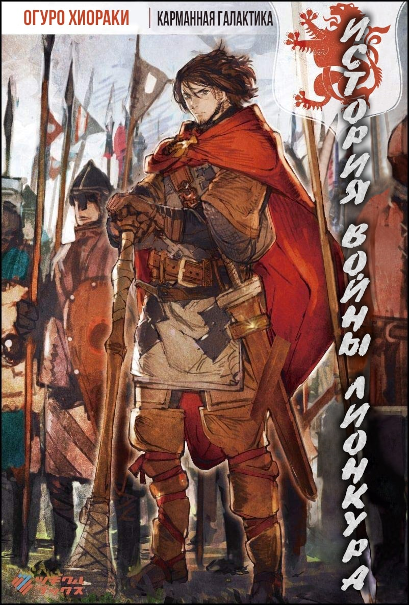

История войны Лионкура

Японское наименование: リオンクール戦記
Английское наименование: A History of the Lioncourt War
Автор: Огуро Хиораки
Издательство: Суосету
Вид: Вэб-новелл
Статус: Завершён
Перевод с японского: Mushu Sibiriak
Редактор: -
Ретушь иллюстраций: -
Английское наименование: A History of the Lioncourt War
Автор: Огуро Хиораки
Издательство: Суосету
Вид: Вэб-новелл
Статус: Завершён
Перевод с японского: Mushu Sibiriak
Редактор: -
Ретушь иллюстраций: -
Аннотация: Танака обычный служайщий, жизнь которого внезапно оборвалась в 41 год. После смерти он планировал попасть в ад, и провести там много времени, пока вновь не переродиться, но судьба приготовила ему другое!